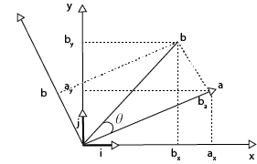

Welcome to Domates
Copyright © 2020 by Mine Melodi Çalışkan and Engin Alpman.
For the applications visit GitHub repository.
Statistical measures from a geometric perspective
In this section, we are going to look at the statistical measures from the perspective of linear algebra and geometry. Our goal is to investigate random variables and their relationships through correlation and variance analysis. We will build our content on the vector spaces and the dot product. We will put a special emphasis on considering various definitions of the concepts because they will shape our intuition.
Introducing our star: Dot Product
Let’s start with the dot product. What is the dot product? It is the element-wise multiplication and then the addition of the elements of the vectors.
\[ \overrightarrow{a}.\overrightarrow{b} = a_1.b_1 + \dots + a_n.b_n \]
But what is the intuition behind this? Let’s play around algebraically first and consider Euclidean distance between these two vectors \(\overrightarrow{a}\) and \(\overrightarrow{b}\).
In this case, we can observe that as the distance between the vectors decreases the value of the dot product increases and vice versa. So, we can interpret the dot product as an operation that rewards the similarity which increases when the two vectors get closer.
Let’s continue to investigate this “closeness” in a geometric perspective and consider the effect of their direction.

Figure 1.1. a and b vectors in x − y coordinates.
Let’s derive the formula in terms of vector components.
Let \(\overrightarrow{i},\overrightarrow{j}\) be the basis vectors in \(\mathbb{R}^2 \) with length one and point parallel and in positive direction to the \(x-\)axis and \(y-\)axis and let \(\overrightarrow{a}=(a_x,a_y)\) and \(\overrightarrow{b}=(b_x,b_y)\) be vectors in this space. So, we have:
where \(\overrightarrow{i}.\overrightarrow{i}=\overrightarrow{j}.\overrightarrow{j}=1\) and \(\overrightarrow{i}.\overrightarrow{j}=\overrightarrow{j}.\overrightarrow{i}=0.\)
So, we can interpret that when we dot product two vectors, we reward their similarity with respect to their components in \(x-y\) direction.
But there are infinitely many bases for this space, and \(i-j\) pair is just one of them. Observe that if we rotate the \(x-y\) axis, their basis vectors \(\overrightarrow{i}, \overrightarrow{j}\) won't change as they point toward the positive direction of their respective axis. So, for example, we can choose a basis whose unit vectors on the direction of \(\overrightarrow{b}\) and calculate the dot product as follows:
\[ \overrightarrow{a}.\overrightarrow{b} = a_a . b_a + a_{a_{\perp}} . b_{a_{\perp}} = \left | \overrightarrow{b} \right |.\cos{\theta} . \left | \overrightarrow{a} \right | \]

We can also choose the unit vector in the direction of the vector \(\overrightarrow{a}\) as \(\overrightarrow{u} = \frac{\overrightarrow{a}}{||\overrightarrow{a}||}\) and the unit vector perpendicular to that \(\overrightarrow{a_\perp}\) as a basis. In this case our interpretation of their similarity shifted to:

In this case, we reward the similarity between \(\overrightarrow{a}\) and \(\overrightarrow{b}\) with respect to \(\overrightarrow{a}\) and its perpendicular vector \(\overrightarrow{a_\perp}\). The underlying reason is the same when we dot product we are rewarding the similarity, it is just the matter of the rotation of the axes. When we rotate two vectors together, their lengths and the angle between them stays the same.
Let's consider a daily example. Suppose you are swimming in the sea and let's think about these three different directional cases:
- Swimming against the waves: You have to put extra effort to keep your speed at constant, waves will have a negative effect on your speed
- Swimming in the direction of the waves: You will gain extra speed boost if you swim this direction
- Swimming in the perpendicular direction to the waves: It will only change your direction but won't have an effect on your speed.
So, the waves will boost your speed by the projection on the shared direction and we can infer that the effect of the waves on your speed is proportional to the dot product between the speed of the waves and yours.

So by (\ref{eq:projection_a}) and (\ref{eq:projection_b}) we have: We can combine our derivations in the following formula:
Cosine, tell us how similar we are!
It is no surprise to see the cosine function when we are talking about similarities. Cosine is directly related to the similarity of two vectors and used as a similarity measure in the inner product spaces. Note that cosine similarity is a judgment of the orientation and not the magnitude.
- When two vectors are in the same direction, the angle between them is \(0^{\circ}\) and \(\cos(0^{\circ}) = +1\)
- When they are perpendicular to each other and do not share any single component, the angle between them is \(90^{\circ}\) and \(\cos(90^{\circ}) = 0\).
- When two vectors are in the opposite direction, the angle between them is \(180^{\circ}\) and \(\cos(180^{\circ}) = -1\).
Correlation is just a spicy Cosine
Now we will investigate the relationship between two parameters which we will call \(X\) and \(Y\). Relationship in this context is not a cause-and-effect type of relationship, but how a change in one parameter is accompanied by the other one. It is also important to note that the correlation we consider here is Pearson’s Correlation and it only captures the linear relationship between the parameters. That’s why it is possible to have a zero Pearson correlation between two non-linearly correlated parameters.
Suppose we are running a supermarket and know that apple sales will be higher in the spring. To make storage and sales planning, we want to know if there is any relationship between lemon and apple sales so that for example, if there is a positive correlation, we can infer lemon sales will increase in the spring too and we have to increase our storage capacity. You can think \(X\) as the number of apples and \(Y\) as the number of lemons sold in the supermarket. \(X\) and \(Y\) will consist of several measurements corresponding to different sales days. So, if the data is collected for ten days, \(X\) and \(Y\) will consist of ten values, each corresponding to a sales of a different day. We want to know if there is a relation between apple and lemon sales.
Let's think \(X\) and \(Y\) as vectors, \(X= [x_1, x_2, \dots, x_n ]^T\)and \(Y = [y_1, y_2, \dots, y_n ]^T\), and each components of \(X\) and \(Y\) are corresponding to the consecutive measurements of two different things that we would like to analyze their relationship.
We can expect the values of \(X\) and \(Y\) to have different scales. In order to compare \(X\) and \(Y\), we need to scale them by subtracting their mean, element-wise, so that they will be zero-centered. From a geometric point of view, in this mean-centering procedure, we re-position the coordinate system to make the origins coincide with the average point.
This scaling will provide us the ability to compare the parameters with respect to their direction in each dimension. In other words, we can expect components of \(X\) and \(Y\) to share the same signs when they behave similarly. These values and how they relate to the relationship between parameters can remind us the cosine function as we are investigating the degree of similarity between two vectors.
Hmm, we are investigating the relationship between two vectors. Isn’t the dot product boost the similar components of the vectors? It can be helpful in our case.
From the dot product we know that:
\[ \overrightarrow{X}.\overrightarrow{Y} =\left | \overrightarrow{X}\right |. \left |\overrightarrow{Y} \right|.\cos{\theta}\] Element-wise subtracting their means from the parameters will give us: \[ (\overrightarrow{X} - \overrightarrow{\mu_X}).(\overrightarrow{Y} - \overrightarrow{\mu_Y}) = \left | (\overrightarrow{X} - \overrightarrow{\mu_X}) \right |. \left | (\overrightarrow{Y} - \overrightarrow{\mu_Y}) \right |.\cos{\theta} \]
Finally, we have the cosine of the angle between \(X\) and \(Y\) as correlation \[ Corr(X,Y) =\cos{\theta} = \frac{(\overrightarrow{X} - \overrightarrow{\mu_X}).(\overrightarrow{Y} - \overrightarrow{\mu_Y})}{\left | (\overrightarrow{X} - \overrightarrow{\mu_X}) \right |. \left | (\overrightarrow{Y} - \overrightarrow{\mu_Y}) \right |} \]
That’s it! Correlation is just the cosine of the angle between the random variables that we are investigating. If the random variables are perpendicular to each other, they have nothing in common and the correlation between them would be \(\cos(90^{\circ}) = 0\). If they are in the same direction, they are highly correlated and it will give us \(\cos(0^{\circ}) = + 1\). If they point to the opposite directions, they are highly and negatively correlated as \(\cos(180^{\circ}) = -1.\)
License

This work is licensed under a Creative Commons Attribution-NoDerivatives 4.0 International License.